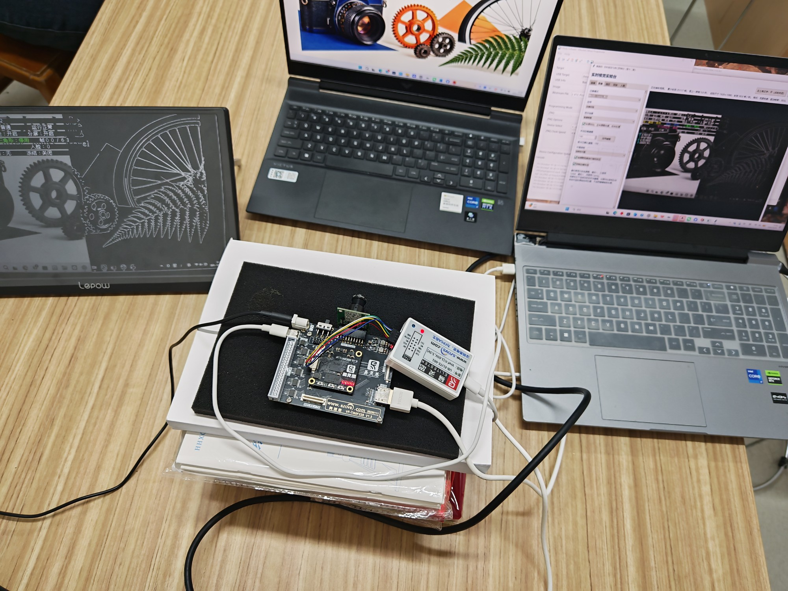
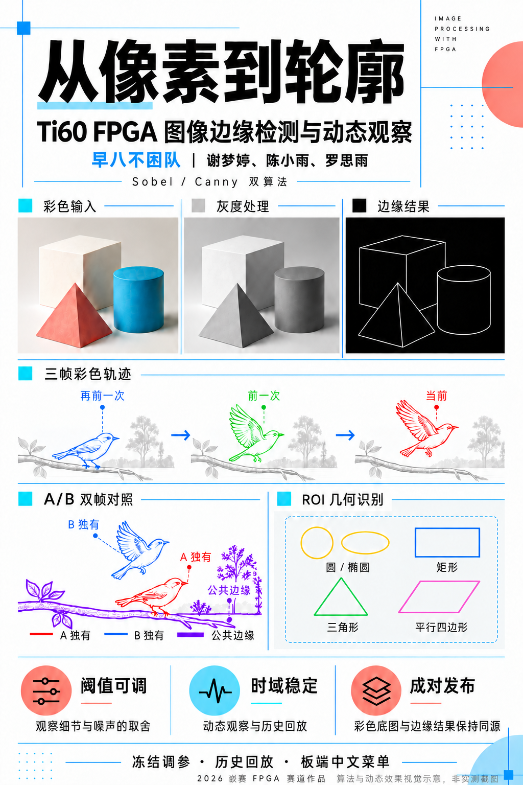
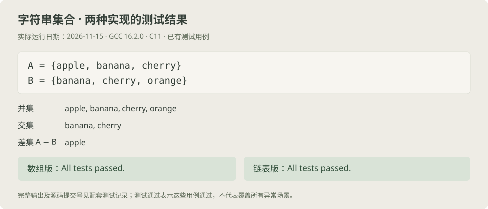

共 3 个项目
FPGA串口界面团队项目
Ti60 实时视觉与串口控制
面向摄像头图像处理和电脑端控制的系统。仓库包括 Sobel / Canny 边缘处理、几何识别、板端工程、电脑控制台与验证资料。
- 解决问题
- 通过电脑端串口界面控制视觉处理功能，连接板端处理与显示输出。
- 我的分工
- 负责电脑端串口界面。具体视觉算法、硬件与系统整体成果属于团队项目范围。
- 使用技术
- 串口交互、电脑控制台；系统整体基于 Ti60 FPGA 与 Verilog / SystemVerilog 工程。
- 主要困难
- 显示器正常，电脑端却严重卡顿，长时间工作后黑屏。原板卡资源与硬件配置不足以支持预期的同步显示。
- 当前进展
- 2026年9—10月完成。已购买并加入分配器和采集卡，补充硬件配置，解决同步显示问题。

项目联调实拍，由本人提供。点击可查看大图。公开项目说明与复现检查清单。
项目海报

项目海报；其中算法与动态效果为视觉示意，非实测截图。文字版前后观察
联调前后的实际观察| 观察位置 | 补充硬件前 | 处理与结果 |
|---|
| 显示器 | 输出正常 | 保留正常显示作为对照 |
|---|
| 电脑端界面 | 严重卡顿，长时间工作后黑屏 | 加入分配器和采集卡，解决同步显示问题 |
|---|
查看项目结构与后续验证计划
FPGA_engin/ 板端工程入口与 RTL
开发源码/pc_v11/ 电脑控制台源码
开发源码/tb/ 测试台
说明文档/ 使用与交付说明
验证记录/ 已有仿真与报告
已补充分配器和采集卡。后续完善配置清单和连接步骤，方便再次搭建。
此页公开现场照片、项目海报、配置与处理记录；原始工程由私有仓库维护。
C 语言集合测试
字符串集合与数据结构实践
项目从2026年9月开始，仍在进行，包含集合、英文文本排版、外部排序等练习。我参与的部分是集合实现与测试，用两种结构理解相同操作的实现差异。
- 解决问题
- 用数组和链表表示字符串集合，实现添加、删除、并集、交集、差集、子集判断等操作。
- 我的分工
- 负责集合与测试；针对重复元素、空集合、删除边界、容量限制和结果写回检查程序行为。
- 使用技术
- C11、数组、链表、动态内存管理、assert 断言测试、Git。
- 关键挑战
- 需要兼顾容量和字符串边界，并正确释放链表节点与字符串；这是实现及测试的关注点。
- 当前证据
- 仓库保留数组与链表源码、测试程序和测试记录。分配失败模拟与内存检测可继续补充。

2026-11-15实际重新编译并运行当前本地仓库副本的数组、链表测试。查看完整测试输出与源码提交号。
代码证据：遍历链表判断成员是否存在
int set_contains(const LinkedSet *set, const char *text)
{
const Node *current = set->head;
while (current != NULL) {
if (strcmp(current->text, text) == 0) return 1;
current = current->next;
}
return 0;
}
摘编自 task1_set/linked_set.c 的 set_contains，压缩了部分排版。逐个比较字符串，命中返回 1，遍历结束返回 0；若忽略字符串比较长度因素，时间复杂度为 O(n)。
PythonOCR团队项目
本地 OCR 图片与文档识别
2026年7月完成的团队桌面工具，支持图片与PDF导入、文字识别、结果编辑和历史检索。
- 解决问题
- 将文件导入、识别、编辑与历史查询组织成完整的本地工作流程。
- 参与范围
- 参与团队项目实践；此处展示团队工具界面，个人模块与代码复盘继续整理。
- 使用技术
- Python、PaddleOCR、Tkinter、SQLite。
- 实践关注
- 识别结果需要能够修改和再次检索，界面操作与历史记录需要衔接。
- 当前进展
- 团队项目已完成；保留原有工作台截图与源码链接，后续补充实践笔记。
 来自团队仓库 project6/html/assets/主工作台.png 的初始界面截图，并非本次重新运行得到的识别结果。
来自团队仓库 project6/html/assets/主工作台.png 的初始界面截图，并非本次重新运行得到的识别结果。
查看相关学习记录